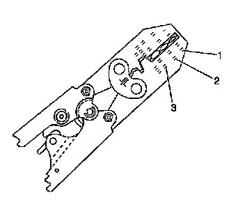
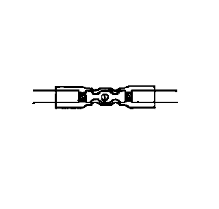
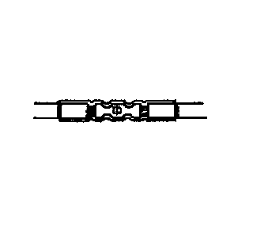

High Temperature Wiring Repairs
HIGH TEMPERATURE WIRING REPAIRS
TOOLS REQUIRED
J-38125 Terminal Repair Kit
HIGH TEMPERATURE WIRING
Wiring that is exposed to high temperatures, 135°C (275°F) or higher, for prolonged periods of time may use materials i.e. wires, connectors, and shielding that has a higher heat rating than typical wiring. When making a repair in a high temperature area observe the following:
- Use high temperature bulk wire rated at 150°C (302°F) continuous temperature to replace any damaged wire.
- Replace any heat shielding that is removed.
- Cover any DuraSeal splice sleeves with SCT1 shrink tubing (available in the J-38125 Terminal Repair kit).
- After making a wiring repair, ensure that the location of the wiring is not moved closer to the heat source.
IDENTIFYING HIGH TEMPERATURE WIRING
Wiring that is exposed to high temperature, 135°C (275°F) or higher, for prolonged periods of time need special considerations when making wiring repairs. Areas that may be exposed to higher temperatures can be identified by heat resistant materials that are being used in those areas. These materials may include heat reflective tape, moon tape, and high temperature shrink tubing. Also conduit and other protective coverings may be used. Because conduit or similar coverings are used throughout the vehicle regardless of the temperature, it may be necessary for the technician to determine if an area is exposed to excessive heat before making a wiring repair. Obvious areas of consideration would be any area located near the exhaust manifolds, catalytic converter, and exhaust pipes.
The J-38125 contains much of the material you will need to perform repairs on areas exposed to high heat. The kit contains the following items:
- DuraSeal splice sleeves to crimp and seal connections
- High temperature SCT1 shrink tubing to protect the splice sleeves
- A large sampling of common electrical terminals
- The correct crimp tool to attach the terminals to the wires
- The correct tools to remove the terminals from the connectors
The J-38125 does not contain wire that is suitable to high temperature exposure. Use high temperature bulk wire rated at 150°C (302°F) continuous temperature of the same or larger gage size as the original wire when repair damage wire. Also replace any reflective tape that you remove during the repair.
HIGH TEMPERATURE WIRE REPAIR
IMPORTANT: Refer to Wiring Repairs in order to determine the correct wire size for the circuit you are repairing. You must obtain this information in order to ensure circuit integrity.
If any wire except the pigtail is damaged, repair the wire by splicing in a new section of wire rated at 150°C (302°F) continuous temperature rating of the same gage size (0.5 mm, 0.8 mm, 1.0 mm etc.). Use the DuraSeal splice sleeves and splice crimping tool from the J-38125 and then encapsulate the splice sleeve using the high temperature SCT1 shrink tubing. Use the following wiring repair procedures in order to ensure the integrity of the sealed splice.
1. Open the harness by removing any tape.
IMPORTANT: You must perform the following procedures in the order listed. Repeat the procedure if any wire strands are damaged. You must obtain a clean strip keeping all of the wire strands intact.
2. Use a sewing seam ripper, available from sewing supply stores, in order to cut open the harness in order to avoid wire insulation damage.
3. Cut as little wire off the harness as possible. You may need the extra length of wire in order to change the location of a splice.Adjust splice locations so that each splice is at least 40 mm (1.5 in) away from the other splices, harness branches, or connectors.
4. Strip the insulation:
- When adding a length of wire to the existing harness, use the same size wire as the original wire.
- Perform one of the following items in order to find the correct wire size:
- Find the wire on the schematic and convert the metric size to the equivalent American wire gage (AWG) size.
- Use an AWG wire gage.
- If you are unsure of the wire size, begin with the largest opening in the wire stripper and work down until achieving a clean strip of the insulation.
- Strip approximately 7.5 mm (0.313 in) of insulation from each wire to be spliced.
- Do not nick or cut any of the strands. Inspect the stripped wire for nicks or cut strands.
- If the wire is damaged, repeat this procedure after removing the damaged section.
5. Slide a section of high temperature SCT1 shrink tubing down the length of wire to be spliced. Ensure that the shrink tubing will not interfere with the splice procedure.
6. Select the proper DuraSeal splice sleeve according to the wire size. Refer to the above table at the beginning of the repair procedure for the color coding of the DuraSeal splice sleeves and the crimp tool nests.

7. Use the Splice Crimp Tool from the J-38125 in order to position the DuraSeal splice sleeve in the proper color nest of the Splice Crimp Tool. The crimp tool has three nests, 1 is for the salmon and green splice sleeve, 2 is for the blue splice sleeve, and 3 is for the yellow splice sleeve.

8. Place the DuraSeal splice sleeve in the nest. Ensure that the crimp falls midway between the end of the barrel and the stop. The sleeve has a stop (3) in the middle of the barrel (2) in order to prevent the wire (1) from going further. Close the hand crimper handles slightly in order to firmly hold the DuraSeal splice sleeve in the proper nest.

9. Insert the wire into the DuraSeal splice sleeve barrel until the wire hits the barrel stop.
10. Tightly close the handles of the crimp tool until the crimper handles open when released.The crimper handles will not open until you apply the proper amount of pressure to the splice sleeve. Repeat steps 4 and 5 for the opposite end of the splice.

11. Using the heat torch, apply heat to the crimped area of the barrel.
12. Gradually move the heat barrel to the open end of the tubing:
- The tubing will shrink completely as the heat is moved along the insulation.
- A small amount of sealant will come out of the end of the tubing when sufficient shrinkage is achieved.
13. Center the high temperature SCT1 shrink tube over the DuraSeal splice sleeve.
14. Using the heat torch, apply heat to the high temperature heat shrink tubing.
15. Gradually move the heat from the center to the open end of the tubing:
- The tubing will shrink completely as the heat is moved along the insulation.
- A small amount of sealant will come out of the end of the tubing when sufficient shrinkage is achieved.
16. Replace any reflective tape and clips that may have been remove during the repair.